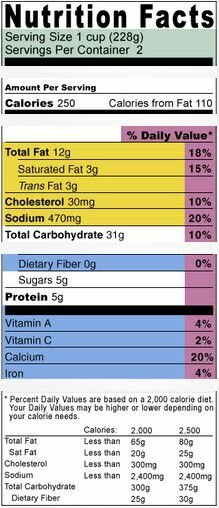

The World's Healthiest Foods are health-promoting foods that can change your life.
The World's Healthiest Foods are health-promoting foods that can change your life.
Try our exciting new WHFoods Meal Plan.
The World's Healthiest Foods are health-promoting foods that can change your life.
Try our exciting new WHFoods Meal Plan.
Why did we rate our foods and recipes?
We rated our foods and recipes to give you an extremely fast, simple, yet still reliable way to find the nutrients you need when you need them. Are you looking for foods that aren't loaded with calories, yet provide rich in zinc? Or recipes that are both high in fiber and fit well into a calorie-appropriate meal plan? We wanted you be able to access this type of nutritional information with a click of your mouse.
Where did we start?
We began with a computerized analysis of the nutritional contents of the World's Healthiest Foods. In other words, we started with a food like carrots, and we analyzed how much vitamin C, vitamin A, zinc, protein, etc. that food contained in one commonly eaten serving. (In order to conduct our analysis, we used the latest database version of the gold standard software developed by ESHA Research in Salem, Oregon, U.S.) We repeated this process until we analyzed the key nutrients in each of our WHFoods. Whenever possible, we used ESHA database items that were obtained from the U.S. Department of Agriculture (USDA) National Nutrient Database for Standard Reference. These USDA-derived database items typically contained more extensive nutrient data than comparable non-USDA items.
In the case of some WHFoods and their nutrient content, we came across unique issues that required us to do extensive additional research. As an example, here is the process that we used to determine the average amount of iodine in sea vegetables.
While analyzing the research on iodine in sea vegetables, we noticed that the amount reported was astonishingly variable. At one end of the spectrum, we noticed that sea vegetables were reported as having 66 times the amount of iodine of iodized table salt! Yet, at the other end of the spectrum, we noticed that samples of other sea vegetables were reported as having 3,200 times less iodine than iodized salt. This range for iodine content in sea vegetables was not only amazing—it was also confusing for anyone who wanted to regularly consume sea vegetables and keep his or her iodine intake in an appropriate range.
At this point, we went further, and we used information provided by Food Standards Australia New Zealand (FSANZ), the U.S. National Institutes of Health (NIH), and ESHA Research (The Food Processor database, version 10.12) to create the chart below showing the iodine content in various samples of sea vegetables.
| Sea Vegetable Description | Iodine (mcg/g) | Source* |
|---|---|---|
| Maine Coast dried nori | 0.014 | ESHA, 2012 |
| Unspecified seaweed broth | 0.23 | FSANZ, 2011 |
| wakame broth | 0.5 | FSANZ, 2011 |
| wakame, fresh/frozen | 1.2 | FSANZ, 2011 |
| Maine Coast dried kelp | 1.44 | ESHA, 2012 |
| hijiki broth | 9.2 | FSANZ, 2011 |
| nori, dried | 9.4 | FSANZ, 2011 |
| nori, dried | 9.4 | FSANZ, 2011 |
| unspecified seaweed, cooked | 18 | FSANZ, 2011 |
| nori, dried | 20 | FSANZ, 2011 |
| arame broth | 21 | FSANZ, 2011 |
| wakame, cooked | 27 | FSANZ, 2011 |
| wakame, cooked | 31 | FSANZ, 2011 |
| Eden dry wakame | 32 | ESHA, 2012 |
| arame, cooked | 38 | FSANZ, 2011 |
| unspecified seaweed, cooked | 76 | FSANZ, 2011 |
| unspecified seaweed, dried | 83 | FSANZ, 2011 |
| unspecified seaweed, broth | 96 | FSANZ, 2011 |
| kombu, fresh/frozen | 110 | FSANZ, 2011 |
| hijiki, dried | 140 | FSANZ, 2011 |
| hijiki, cooked | 160 | FSANZ, 2011 |
| unspecified seaweed, broth | 190 | FSANZ, 2011 |
| kombu, broth | 190 | FSANZ, 2011 |
| kombu, cooked | 190 | FSANZ, 2011 |
| kombu, broth | 210 | FSANZ, 2011 |
| Eden wakame instant flakes | 230 | ESHA, 2012 |
| wakame, dried | 280 | FSANZ, 2011 |
| Eden hijiki | 490 | ESHA, 2012 |
| arame, dried | 540 | FSANZ, 2011 |
| Eden arame | 710 | ESHA, 2012 |
| hijiki, dried | 790 | FSANZ, 2011 |
| kombu, dried | 2100 | FSANZ, 2011 |
| unspecified seaweed, dried | 2500 | FSANZ, 2011 |
| unspecified seaweed, dried | 2800 | FSANZ, 2011 |
| All seaweeds, range | 16-2,984 | NIH, 2011 |
*ESHA stands for ESHA Research, Salem OR, Food Processor, Database Version 10.12, 2012. FSANZ stands for Food Standards Australia New Zealand, Survey of Iodine Levels in Seaweed and Seaweed Containing Products in Australia, 2011. NIH stands for U.S. National Institutes of Health, Office of Dietary Supplements, Dietary Supplement Fact Sheet, 2011.
After considering the types of sea vegetables most commonly consumed in the U.S., the form of consumption (dried, fresh, cooked, etc.), and the number of samples showing high, low, and moderate iodine amounts, we selected 750 micrograms of iodine as the average amount found in 1 tablespoon (5 grams) of dried sea vegetable, and this is the value that we incorporated into our nutritional data for sea vegetables.
What kind of categories did we establish for ranking foods?
We picked a simple, three-category system for ranking all foods. The three categories we chose were "good," "very good," and "excellent." We decided to develop a ranking process that would let us separate "good" food sources of a nutrient from "very good" sources as well as "very good" sources of a nutrient from "excellent" ones. We assumed you would not want to know about the nutritional quality of a food if it didn't rise up to at least the "good" level.
What kind of categories did we establish for ranking foods?
We picked a simple, three-category system for ranking all foods. The three categories we chose were "good," "very good," and "excellent." We decided to develop a ranking process that would let us separate "good" food sources of a nutrient from "very good" sources as well as "very good" sources of a nutrient from "excellent" ones. We assumed you would not want to know about the nutritional quality of a food if it didn't rise up to at least the "good" level.
How did we decide which foods were "good," "very good," and "excellent" sources of nutrients?
We developed a two-part formula to determine how rich a food was as a source of nutrients. The first (and most important) part of this formula looked at the nutrient density of each food. Nutrient density is a key idea in nutritional science. It compares the nutritional content of a food to its calorie content.
With the categories of "good," "very good," and "excellent" in hand and our thinking focused on nutrient density, we developed specific density criteria for each of our three categories. To qualify as a "good" source of nutrients, we decided that a food should have a density value of at least 1.5. In other words, that food had to give you 1.5 times as much nutrition as calories. Or to put it slightly differently, it had to give you 50% more in nutrition than it used up in calories.
Let's take a real-life example. One-quarter cup is a commonly eaten snack portion of nuts or seeds, so we took one-quarter cup of sunflower seeds as our starting point for ranking this food. That quarter cup of sunflower seeds was determined to have about 200 calories (204.40 to be exact), and those calories represented about 11% of a 1,800-calorie daily diet. Were sunflower seeds a "good" source of any nutrient? We used our 1.5 criterion to help us decide. Since those 204.40 calories' worth of sunflower seeds provided about 11% of a day's calories, they had to provide at least 1.5 times that much of some nutrient to qualify as a "good" source of that nutrient. Did one-quarter cup of sunflower seeds supply at least 17% (1.5 times 11%) of the daily requirement for some nutrient? The answer was yes! While using up only 11% of the day's calories, this single serving of sunflower seeds provided over 17% of the daily requirement for vitamin B3, folate, vitamin B6, magnesium, phosphorus, selenium, and manganese. That achievement—coupled with the ability of these sunflower seeds to provide at least 2.5% of the recommended daily requirement (another criteria of our rating system—qualified them as a "good" source for each of these seven nutrients.
For vitamin B1 and for the mineral copper, sunflower seeds fared even better. Here they provided at least 3.4 times more of the nutrient requirement than the calorie requirement. They also provided at least 5% of the recommended daily requirement—qualifying them as a "very good" source of both nutrients.
Finally, in the case of vitamin E, sunflower seeds received our highest rating. They provided at least 7.6 times more of the nutrient requirement than the calorie requirement, and at least 10% of the recommended daily requirement. This had them meet the criteria of being an excellent source of this very important nutrient.
Below is a table showing our rules for classifying each food as an "excellent" or "very good" or "good" nutrient source:
| World's Healthiest Foods Rating | Rule |
|---|---|
| excellent | DV>=75% OR Density>=7.6 AND DV>=10% |
| very good | DV>=50% OR Density>=3.4 AND DV>=5% |
| good | DV>=25% OR Density>=1.5 AND DV>=2.5% |
As we've noted, the ratings were based upon calculations involving a daily requirement. We wanted to now share with you how we derived these values, most of which came from either Daily Values or Dietary Reference Intakes.
As a consumer, you are most likely familiar with the Nutrition Facts Panels that appear on food packaging. In fact, over 50,000 different packaged foods in the marketplace display Nutrition Facts Panels! An example of a Nutrition Facts Panel is pictured here: 
The recommendation standards that you see on a Nutrition Facts Panel are called Daily Values, or DVs. These DVs are established by the U.S. Food and Drug Administration (FDA), and they are presented on a Nutrition Facts Panel in terms of percentages. In the example above, each serving of the food provides 18% of the recommended daily intake for total fat; 4% of the recommended intake for vitamin A; 20% of the recommended intake for calcium; and other percentages as indicated in the Percent Daily Value column.
In addition to these DV standards established by the FDA are some equally important nutrient requirement standards set by the Institute of Medicine at the National Academy of Sciences. These standards are called the Dietary Reference Intakes, or DRIs. Unlike the DVs, you will not find the DRIs on any food packaging. But virtually all healthcare practitioners who offer nutritional assessment are familiar with the DRIs and take them into account when evaluating nutrient needs. Because both sets of standards—the DVs and the DRIs—are important when considering daily nutrient requirements, we decided to incorporate both into our rating system.
Below is a chart that summarizes the DVs and DRIs that we took into account when establishing our WHFoods nutrient requirement standards. The first two columns of this chart show the name for each nutrient and the designated unit of measurement. The third column shows the standard that we ultimately adopted for each nutrient. The last five columns show the Daily Values (DVs) and key adult Dietary References Intakes (DRIs) that we considered when analyzing the requirements for each nutrient.
| Nutrient | Units* | WHFoods Standard | Daily Value (DV)** | DRI for 31-50F** | DRI for 51-70F** | DRI for 31-50M** | DRI for 51-70M** |
|---|---|---|---|---|---|---|---|
| biotin | mcg | 30 (DRI) | 30 | 30 | 30 | 30 | 30 |
| calcium | mg | 1000 (DRI) | 1000 | 1000 | 1000 | 1000 | 1200 |
| calories | kcal | 1800 (DRI) | 2000 | 1800** | 1600** | 2200-2400** | 200-2200** |
| choline | mg | 425 (DRI) | none | 425 | 425 | 550 | 550 |
| chromium | mcg | 35 (DRI) | 120 | 25 | 20 | 35 | 30 |
| copper | mcg | 900 (DRI) | 2000 | 900 | 900 | 900 | 900 |
| fat(total) | g | 65 (DV) | 65 | 25-35% calories | 25-35% calories | 25-35% calories | 25-35% calories |
| fiber | g | 25 (DV) | 25 | 25 | 21 | 38 | 38 |
| fluoride | mg | 3 (DV) | 3 | 3 | 3 | 4 | 4 |
| folate | mcg | 400 (DV) | 400 | 400 | 400 | 400 | 400 |
| iodine | mcg | 150 (DV) | 150 | 150 | 150 | 150 | 150 |
| iron | mg | 18 (DV) | 18 | 18 | 8 | 8 | 8 |
| magnesium | mg | 400 (DV) | 400 | 320 | 320 | 420 | 420 |
| manganese | mg | 2.0 (DV) | 2.0 | 1.8 | 1.8 | 2.3 | 2.3 |
| molybdenum | mcg | 45 (DRI) | 75 | 45 | 45 | 45 | 45 |
| niacin (B3) | mg | 16 (DRI) | 20 | 14 | 14 | 16 | 16 |
| omega-3s | g | 2.4 (WHF)** | none | (1.54) | (1.54) | (2.04) | (2.04) |
| pantothenic acid | mg | 5 (DRI) | 10 | 5 | 5 | 5 | 5 |
| phosphorus | mg | 700 (DRI) | 1000 | 700 | 700 | 700 | 700 |
| potassium | g | 3.5 (DV) | 3.5 | 3.5 | 4.7 | 4.7 | 4.7 |
| protein | g | 50 (DV) | 50 | 46 | 46 | 56 | 56 |
| riboflavin (B2) | mg | 1.3 (DRI) | 1.7 | 1.1 | 1.1 | 1.3 | 1.3 |
| selenium | mcg | 55 (DRI) | 70 | 55 | 55 | 55 | 55 |
| sodium | mg | 1500 (DRI) | 2400 | 1500 | 1300 | 1500 | 1300 |
| thiamin (B1) | mg | 1.2 (DRI) | 1.5 | 1.1 | 1.1 | 1.2 | 1.2 |
| vitamin A | RAE | 900 (DRI) | 1500 | 700 | 700 | 900 | 900 |
| vitamin B12 | mcg | 2.4 (DRI) | 6 | 2.4 | 2.4 | 2.4 | 2.4 |
| vitamin B6 | mg | 1.7 (DRI) | 2.0 | 1.3 | 1.5 | 1.3 | 1.7 |
| vitamin C | mg | 75 (DRI) | 60 | 75 | 75 | 90 | 90 |
| vitamin D | IU | 400 (DV) | 400 | 600 | 600 | 600 | 600 |
| vitamin E | aEq | 15 (DRI) | 20 | 15 | 15 | 15 | 15 |
| vitamin K | mcg | 90 (DRI) | 80 | 90 | 90 | 120 | 120 |
| zinc | mg | 11 (DRI) | 15 | 8 | 8 | 11 | 11 |
* Units: mcg = micrograms; mg = milligrams; g = grams; kcal = kilocalories; RAE = retinol activity equivalents; IU = international units; aEq = alpha-tocopherol equivalents.
** Daily Value = Daily Value as established by the U.S. Food and Drug Administration; DRI for 31-50F = Dietary Reference Intake for a 31-50 year-old female as established by the National Academy of Sciences; DRI for 51-70F = Dietary Reference Intake for a 51-70 year-old female as established by the National Academy of Sciences; DRI for 31-50M = Dietary Reference Intake for a 31-50 year-old male as established by the National Academy of Sciences; DRI for 51-70M = Dietary Reference Intake for a 51-70 year-old male as established by the National Academy of Sciences; WHF = World's Healthiest Foods standard not directly obtained from the DVs or DRIs.
While the chart above shows the exact information that we took into account when determining our WHFoods standards for daily nutrient requirements, it does not explain the principles that we used to choose between DVs and DRIs. Here is a list of those principles.
(1) We gave priority to recommendations based on the most comprehensive and most recent research. In most cases, research on the DRIs was more recent and more comprehensive than research on the DVs.
(2) We established a single recommendation for each nutrient that best fit the needs of men and women 31-70 in the U.S. While the DVs are a "one-size-fits-all" set of recommendations for adults and children 4 years and older, the DRIs include 22 distinct age and gender groups and sometimes include a wide range of recommendations for the same nutrient. We considered the DRIs for 31-50 year-old women, 51-70 year old women, 13-50 year-old men, and 51-70 year old men when establishing our nutrient recommendations.
To make more complicated decisions for individual nutrients, we used the following seven principles:
(1) If the DRI was identical for all age/gender groups yet lower than the DV, we chose the DRI.
(2) If the DRI was lower than the DV, but differed by either age or gender, we chose the highest DRI value.
(3) If the DRIs differed either by age or gender and the DV fell in between the highest and lowest DRI, we chose the DV.
(4) If the DV was lower than all of the DRIs, we chose the lowest DRI.
(5) If there were established DRIs yet no established DV, we chose the lowest DRI.
(6) If the DV was equal to any of the DRIs, we chose the DV.
(7) If a nutrient did not have an established DV or DRI, we chose a value based on our own review of the scientific research as published in indexed science journals.
When determining our WHFoods standards for daily nutrient requirements, we did make a few exceptions to the above principles. Our first exception involved potassium. Because our approach at WHFoods avoids intake of processed foods or pre-packaged foods with added salt, our recipes and meal plans tend to provide much lower levels of sodium than found in the average U.S. diet. Sodium, potassium, and other electrolyte nutrients should typically be consumed in a healthy ratio. For this reason, when we established our WHFoods standard for potassium, we stuck with the DV level of 3.5 grams instead of selecting the DRI level of 4.7 grams.
A second exception involved total carbohydrates. While the National Academy of Sciences (NAS) set a Recommended Dietary Allowance (RDA) for total carbohydrates of 130 grams in 2005, it specifically noted that this amount was not the amount needed to provide good health but rather the amount needed to avoid significant problems. What made more sense to us was to use the recommended range for total carbohydrate intake as presented by the NAS in its broader discussion of macronutrient intake. In this broader discussion, the NAS had recommended total carbohydrate consumption within the range of 45-65% total calories. On a 1,800-calorie diet, this recommendation would translate into 202.5-292.5 grams of total carbohydrate. Because we tend to de-emphasize grain intake in our WHFoods recipes and meal plans, and because we generally tend to emphasize intake of low glycemic index foods that have limited to moderate amounts of available carbohydrates, we set a WHFoods recommendation level of 225 grams for total carbohydrate—about 10% higher than the low end of the range recommended by the National Academy of Sciences (NAS) in its discussion of Dietary Reference Intakes. The NAS discusses total carbohydrate intake and intake of other macronutrients under the general heading of Acceptable Macronutrient Distribution Ranges for Healthy Diets (AMDRs).
A third exception involved omega-3 fatty acids. One of the most challenging nutrient recommendations for us to establish was our recommendation for omega-3 fatty acids. We recognized the fact that in 2005, the National Academy of Sciences (NAS) had set an Adequate Intake (AI) level for one particular omega-3 fatty acid (alpha-linolenic acid). This AI was set at 1.6 grams per day for all adults. However, the NAS specifically noted that in their opinion, the research evidence was not sufficiently strong to justify the setting of a Recommended Dietary Allowance (RDA) for omega-3s. For this reason, their choice of an AI standard was based on observed consumption of omega-3s in the U.S. Because we did not share their viewpoint regarding the research evidence on omega-3s, we continued to look for public health recommendations on omega-3s and found a 1999 workshop conducted at the National Institutes of Health (NIH) addressing this issue. The workshop—entitled "Workshop on the Essentiality of and Recommended Dietary Intakes for Omega-6 and Omega-3 Fatty Acids"—was convened to develop science-based, public-health recommendations for omega-3 fatty acids; it included a prestigious group of health researchers and was led by Artemis Simopolous, MD, Alexander Leaf, MD, and Norman Salem, Jr., PhD. This workshop concluded that at least 1.2% of daily calories should come from omega-3 fatty acids, including 1% from alpha-linolenic acid (ALA) and 0.1% each from EPA (eicosapentaenoic acid) and DHA (docosahexaenoic acid). When translated into the context of an 1800-calorie diet, these workshop standards represented a recommendation for 2 grams of ALA, about 200-250 milligrams for EPA, and the same 200-250 milligrams for DHA. Based on these NIH recommendations, we adopted 2.4 grams of omega-3 fatty acids per day as our WHFoods minimum recommended level. While establishing our WHFoods standard for omega-3s, we also noted that the American Dietetic Association had recommended an average intake of 500 milligrams for EPA+DHA (combined), and that the World Health Organization had recommended 1-2 servings of fish per week, where each serving could provide 200-500 milligrams of EPA+DHA (combined). These additional public health recommendations bolstered our confidence in a WHFoods minimum nutrient recommendation level of 2.4 grams for total omega-3s.
If you visit the Food Profile section of our website, you will notice that within each individual food profile, and at the very end of each profile just prior to the References section, we provide you with a hypertext link to an In-Depth Nutritional Profile for the food. This In-Depth Nutritional Profile goes far beyond our WHFoods rating system and provides you with well over 100 nutrient data values for each food. Within these in-depth charts, you will find one further set of ratings that we did not include in our rating system, and that set of ratings involves amino acids. There are 18 amino acids most commonly studied in human health research, and we provide you with nutritional data for all 18 in our food profiles. However, amino acids are an area of special controversy in health research, and public health organizations approach the analysis of amino acids from an unusual variety of perspectives. Organizations like the World Health Organization set amino acid recommendations based on human body weight while organizations like the National Academy of Sciences set amino acid recommendations based on total amount of protein intake. These two criteria (human body weight and total protein intake) can trigger significantly different recommendations. Desirable patterns for amino acid intake are also a matter of unusual debate. Some organizations base their amino acid recommendations on a protein-rich reference food source (for example, egg or milk). Others discount the idea of a single "reference" food. Similarly, digestibility is a key focus in some amino acid analysis systems but not in others. Due to this unusual amount of debate over valid criteria for establishing amino acid recommendations, we decided not to include amino acids in our WHFoods rating system and not to report ratings of "excellent," "very good," or "good" for any amino acids.
At the same time, however, we believed that many website visitors would want some context for evaluating their amino acid intake. In order to provide this context, we took three steps. First, we reviewed the Protein Quality Scoring Pattern presented by the Institute of Medicine (IOM) at the National Academy of Sciences (NAS) within its discussion of amino acid requirements for Dietary Reference Intakes (DRIs). This Protein Quality Scoring Pattern recommended milligram intakes for Indispensable Amino Acids based on total grams of protein intake. (Indispensable Amino Acids—described as those that must be obtained through diet—include histidine, isoleucine, leucine, lysine, methionine+cysteine, phenylalanine+tyrosine, threonine, tryptophan, and valine.) Second, we normed these recommendations for intake of Indispensable Amino Acids on the Daily Value for total protein intake of 50 grams. These two steps allowed us to establish a recommendation level for most of the Indispensable Amino Acids. However, for four of the Indispensable Amino Acids—methione+cysteine and phenylalanine+tyrosine—we needed to take an additional step. Because the IOM/NAS grouped these sulfur amino acids (methione+cysteine) and aromatic amino acids (phenylalanine+tyrosine) together, they did not provide four individual recommended intake levels but only two grouped sets of recommendations. To establish four individual recommendation for each of these important amino acids (methionine, cysteine, phenylalanine and tyrosine) we reviewed data from the National Health and Nutrition Examination Study III (NHANES III), calculated intake ratios for individual amino acids in each amino acid set (sulfur amino acids and aromatic amino acids), and then applied these intake ratios to our milligram amounts as normed on 50 grams of protein intake. The chart below summarizes this information and our calculations:
| Amino Acid | WHFoods Standard (g=grams) | NAS Protein Quality Scoring Pattern | Scoring Pattern Normed for 50 mg Daily Value | NHANES III avg intake, 2+ years | NHANES III avg intake, males, 31-50 years | NHANES III avg intake, males, 51-70 years | NHANES III avg intake, females, 31-50 years | NHANES III avg intake, females, 51-70 years |
|---|---|---|---|---|---|---|---|---|
| Cysteine | 0.26 g | 1.01 | 1.33 | 1.16 | 0.89 | 0.81 | ||
| Histidine | 0.9 g | 18 mg/g/prot | 900 mg | 2.19 | 2.90 | 2.50 | 1.92 | 1.72 |
| Isoleucine | 1.25 g | 25 mg/g/prot | 1,250 mg | 3.55 | 4.59 | 4.03 | 3.12 | 2.83 |
| Leucine | 2.75 g | 55 mg/g/prot | 2,750 mg | 6.08 | 7.91 | 6.90 | 5.33 | 4.82 |
| Lysine | 2.55 g | 51 mg/g/prot | 2,550 mg | 5.26 | 6.97 | 6.00 | 4.65 | 4.16 |
| Methionine | 0.67 g | 1.76 | 2.32 | 2.01 | 1.56 | 1.40 | ||
| Phenylalanine | 0.89 g | 3.39 | 4.41 | 3.85 | 2.97 | 2.69 | ||
| Threonine | 0.97 g | 20 mg/g/prot | 1,000 mg | 3.01 | 3.95 | 3.45 | 2.64 | 2.40 |
| Tryptophan | 0.26 g | 5 mg/g/prot | 250 mg | 0.91 | 1.18 | 1.04 | 0.80 | 0.73 |
| Tyrosine | 0.73 g | 2.78 | 3.62 | 3.11 | 2.41 | 2.17 | ||
| Valine | 1.68 g | 24 mg/g/prot | 1,200 mg | 3.98 | 5.17 | 4.51 | 3.48 | 3.16 |
| MET + CYS | n/a | 25 mg/g/prot | 1,250 mg | 2.77 | 3.65 | 3.17 | 2.45 | 2.21 |
| PHE + TYR | n/a | 47 mg/g/prot | 2,350 mg | 6.17 | 8.03 | 6.96 | 5.38 | 4.86 |
* Chart abbreviations: MET = Methionine; CYS = Cysteine; PHE = Phenylalanine; TYR = Tyrosine; NHANES III — National Health and Nutrition Examination Survey III
Why do some of the results seem so unexpected?
Many food rating systems look at nutrient amounts and nothing more. A food that has 75 milligrams of vitamin C always ranks higher than a food that has 60 milligrams. Our rating system takes issue with that approach. From our perspective, it is very different to get 15 milligrams of vitamin C by eating 300 calories of some food than to get 15 milligrams by eating only 100 calories of a different food. If you have to eat 300 calories to get 15 milligrams, you are going to use up most of your day's calories (1500) in order to get the daily recommended amount of vitamin C (75 milligrams, or 5 x 15 milligrams in the example above). It makes far more sense to choose the food that provides 15 milligrams for 100 calories. To get the daily recommended amount of vitamin C from that food, you would only need to eat 500 (5 x 100) calories of that food, and you would have many more calories left over for the balance of your daily meal plan. We take calories into account in order to focus on nutrient richness—how "thick" a food is in nutrients. This additional step can result in some unexpected rankings. For example, dairy foods are often described as being "excellent" sources of calcium. In our rating system, however, no dairy food achieves a rating of "excellent" because none is sufficiently "thick" in calcium. Or put somewhat differently, the relative concentration of calories is a little too high in comparison with the concentration of calcium. Yogurt achieves a rating of "very good" for calcium in our system, while cheese and milk achieve ratings of "good." Since several foods—especially leafy greens—contain a much lower concentration of calories in comparison to their concentration of calcium, they earn ratings of "excellent" and top dairy foods on our calcium list. For more information please see the Rating Chart in our calcium article here.
Should I only eat foods with the highest scores?
No! Even though foods with high scores are the most nutrient dense and give you more nutrients for fewer calories, all of the foods featured on this website have unique nutritional value. Many foods with lower scores can complement each other perfectly to round out your total nourishment. At the same time, however, if you find yourself eating exclusively at the lower end of the ranked foods, you may want to consider experimenting with recipes that can bring more highly ranked foods into your diet.


Everything you want to know about healthy eating and cooking from our new book.

Order this Incredible 2nd Edition at the same low price of $39.95 and also get 2 FREE gifts valued at $51.95. Read more